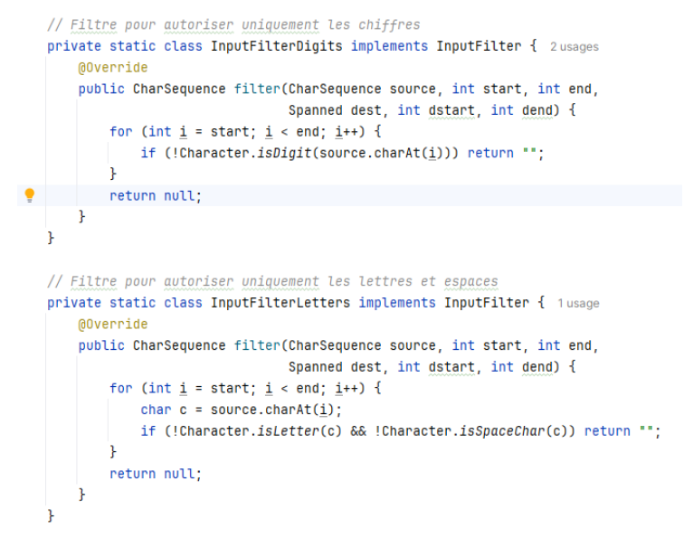
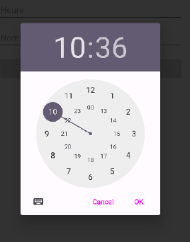
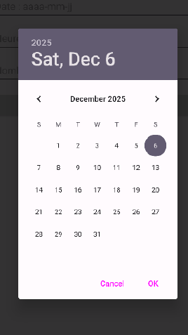
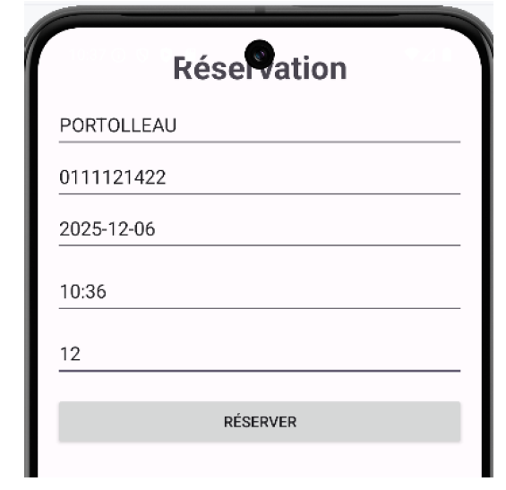
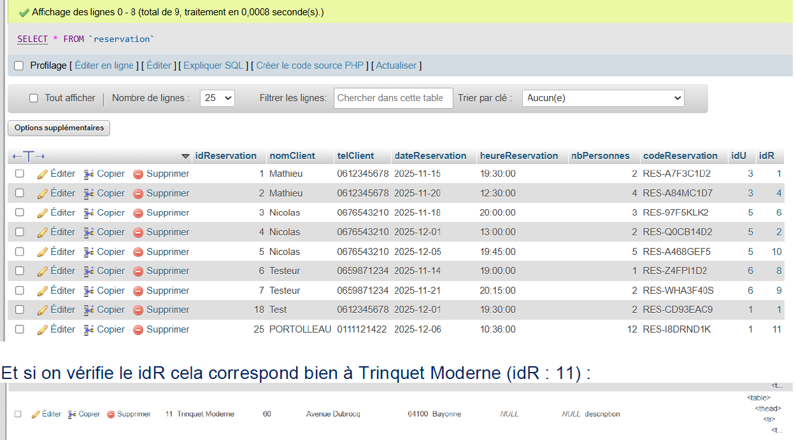

Ticket 8 – Logique : Ajout des contrôles pour la réservation
Dans le cadre du Projet 2 Android – Itération 3, j’ai développé le
Ticket 8 visant à renforcer les contrôles et validations sur le formulaire
de réservation.
Branche utilisée : iteration3_ticket8.
L’objectif est de limiter les erreurs de saisie et de faciliter l’expérience utilisateur.
Améliorations apportées
- Ajout d’un DatePicker pour sélectionner la date afin d’éviter la saisie manuelle.
- Ajout d’un TimePicker pour sélectionner l’heure.
- Validation du numéro de téléphone : exactement 10 chiffres.
- Validation du nom : uniquement lettres et espaces.
- Validation du nombre de personnes : uniquement des chiffres.
- Les champs sont nettoyés avec trim() et vérifiés avant l’envoi.
- Le bouton RÉSERVER déclenche la méthode reserverRestaurant() uniquement si toutes les validations passent.
Filtres personnalisés
Pour limiter automatiquement les saisies, deux classes InputFilter ont été ajoutées :
- InputFilterDigits : autorise uniquement les chiffres.
- InputFilterLetters : autorise uniquement les lettres et espaces.
Ces filtres sont appliqués aux EditText correspondants pour renforcer la validité des données avant même la soumission du formulaire.

Test fonctionnel
- Se rendre sur la fiche détail d’un restaurant.
- Cliquer sur le bouton Réserver pour ouvrir le formulaire.
- Vérifier les contraintes :
- Champ Nom : seules lettres et espaces autorisés, pas de chiffres.
- Champ Téléphone : uniquement 10 chiffres acceptés.
- Champ Date : sélection via calendrier (DatePicker).

- Champ Heure : sélection via horloge (TimePicker).

- Champ Nombre de personnes : uniquement chiffres.
- Compléter tous les champs correctement et cliquer sur RÉSERVER.
- Un Toast confirme l’envoi de la réservation.
- Vérification en base de données : la réservation est bien ajoutée et le idR correspond au restaurant choisi (ex : Trinquet Moderne, idR : 11).

